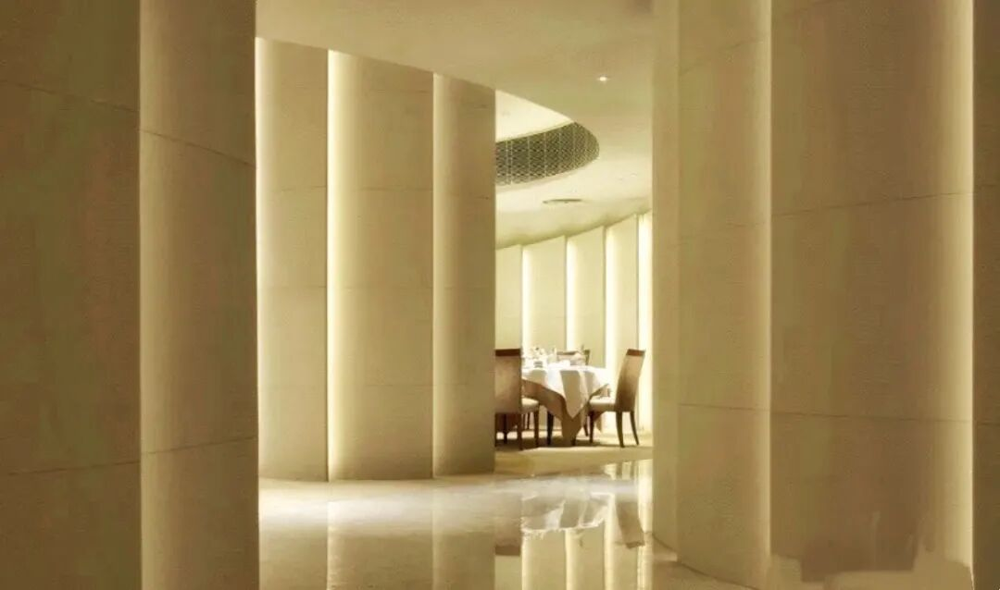
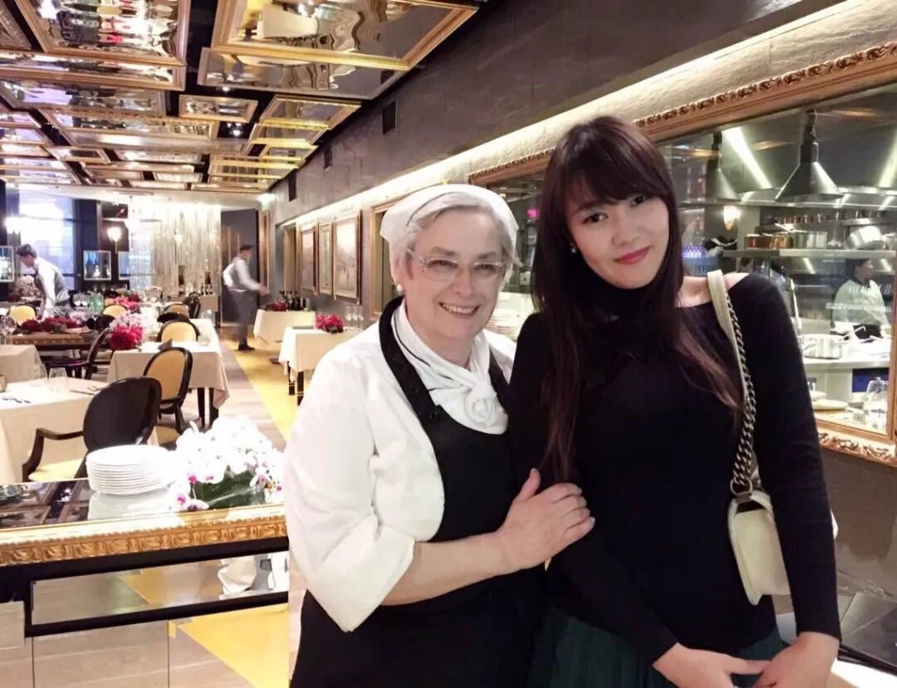

好吃，是一个长久的诱惑
下雨天，躲在家里读蔡澜。
我从小就是“大叔”的迷妹。 “大叔”这种生物见识广博，懂得很多，人情通达而善于为人着想。琴棋书画、酒色财气、吃喝嫖赌……人生中各种玩意都懂其门道，于世界各地的见闻，古今中外的历史，更可说是一流的通达。金庸叔夸蔡澜叔是一个 “真正潇洒的人”。所谓 “潇洒”，是对人生中的失落和不愉快一笑置之。“置之”不太容易，要加上 “一笑”就更难了。
蔡澜说美食系列之 《学会浅尝二字》 2019年 出版

蔡澜先生说：吃不饱的菜最妙
吃好一点，吃少一点，学会浅尝二字
潇洒如蔡澜叔，信奉 “吃” 是一种生活态度，一种热情，其他的可以消失，但是热情不可以消失。但我这样的女人，总是在企图控制体重，公然谈 “吃” 于我感到羞愧。
我的女友 first date 了一个沉迷健身的男生， “健美先生” 不仅在吃饭时严格控制卡路里，还暗示她也不要点太多。女友每每在朋友圈晒出大餐，“健美先生” 都要痛心疾首留言提醒，并私信一张自己在吃寡淡水煮健身餐的照片。
女友很不爽，难道我就不值得一顿正经的晚饭吗？
从此对 “健美先生” 敬而远之，和一位 ”松软先生“ 在一起了。原因简单又直接 ——
女友问 “松软先生” 有什么爱好？
“吃。” 他喝一口龙虾泡饭回答，“吃东西的时候，千万别太刻薄自己。”

“松软先生“ 约女友的老牌粤菜馆，出品稳定猜猜这是上海的哪一家米其林请在文末留言，猜对有奖
“吃” 和谈恋爱一样，千万别太刻薄自己，毕竟人生已经那么艰难。就像蔡澜叔说的，尽量地学习和经历，尽量地吃好东西，人生就比较美好一些。
BTW，我的女友不是我。
所以，坦白记录下自己这些年来到底吃了什么好吃的，也没什么好害羞的吧。只是，我并非专业的美食家，更不要说像蔡澜、沈宏非这样的食神，看他们的文字，把平常的食物变成笔下的佳肴，是艺术，不逊于绘画、文学和音乐，人生享受也。
说起沈宏非，很多年前一起在外滩吃饭，那时候Da Ivo才开业，不像现在这般都是游客，也没有疫情封锁，意大利的主厨老太太飞过来做菜。虽是私人聚餐，沈爷依然耐心讲解、推荐、点评每一道菜，观点专业又中肯，就如同读蔡澜叔的书一样，很多我没尝过的菜，没听过的食材，这些“大叔” 真正见多识广，于世界各地的见闻，古今中外的历史，更可说是一流的通达。
我问，有什么餐厅可以推荐？
沈爷说：”惠食家“
后来因为工作或车展，每年都出差几次广州，街头巷尾，大大小小的餐厅，陶陶居、广州酒家、点都德、炳胜等等都吃过，果然是惠食家从不令人失望。就连上海的分店，水准也在线。
这些年看他的朋友圈，美食少了，段子荤居多，也和蔡澜叔一样活成了 “真正潇洒的人”。

7年前的Da Ivo，沈爷帮忙拍的照片很多餐厅已不在，就算还在，亦早已不同往昔
我不是个怀旧的人，唯一偶尔会怀念的是一家餐厅，一桌吃饭的朋友，一个过去的时代。于是，下决心自己也写一个关于吃的专题，不求美食家般专业，只是将关于吃的如风往事记下来。
”吃” 对每个人类都是一样的，又是如此的不一样。对于 ”吃“，每个人都有自己有独特甚至古怪的偏好。在下期开始写吃啥之前，最后引用蔡澜叔的一段访谈，正一下关于 ”吃“ 的三观。
Let’s Start！
.
.
.
问：这世界上你没有吃过的，不多吧？
答：错，太多了，再活三世，也吃不完。
问：那要怎样才好？
答：一切浅尝。这是一种很深奥的学问，美食当前，叫你不再去碰是不容易的，我自己也忍不了，要学会浅尝不容易。
问：那要怎么开始？
答：要从吃，就吃最好的开始，别贪便宜，有野生的，贵一点也得买，吃过野生的，就知道滋味有多好，再也回不了头去吃养殖的了。煎炸也分好坏，包着的粉那么厚吸满了油，看着就恐怖，好的天妇罗，炸后放在纸上，最多只有一两滴油，你吃过了，就不会去尝坏的了。
问：我们哪有条件天天去吃高级天妇罗？
答：把钱省下来，吃一次好的，这么一来，至少你不会天天想吃肯德基。同样道理，吃过一顿好的寿司，就不会想去试回转的了。
问：不喜欢的呢？像芝士，我就从来不碰。
答：也要逼自己去吃，试过了，你才有资格说喜欢或者不喜欢，从来不碰，就是无知。芝士很臭，但是可以从不臭的卡夫芝士开始，蘸点糖，甜甜的，好像吃蛋糕，慢慢你就会发现卡夫芝士满足不了你，因为这是牛奶做的，当你要求更浓郁的味道时，你就会吃羊奶了，到时，这个芝士的味觉世界，就给你打开了。
问：对着一些我爱吃的东西，总得吃个饱。怎么做到“浅尝”呢？
答：要保持好奇心，中国菜吃了，吃日本，吃韩国，吃泰国，吃越南，吃西餐，什么都好，都不必狂吞，多吃几样。有一句话你记得就是：今天要吃的比昨天好，希望明天就得比今天更精彩。到时，你就会发现，一切食物，浅尝一下，就够了。
欢迎留言，猜猜 “松软先生“ 约女友的老牌米其林粤菜馆是上海的哪一家？猜对有奖噢！

2021.03.08
——
END